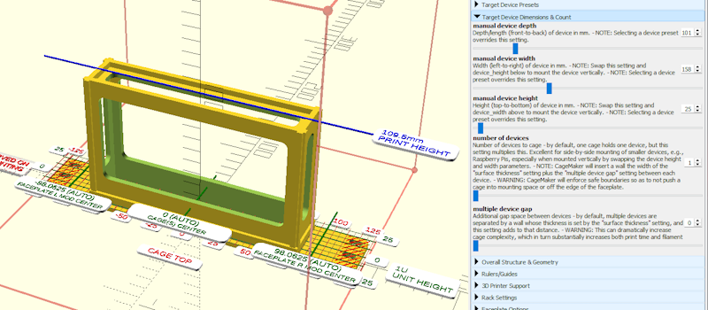

Home
Home

Quick-Start Guide
CageMaker PRCG is a rather powerful toolkit, and as of this writing may well be the most extensive parametric rack-mounting generator toolkit on the planet. This power brings a great number of capabilities to bear, but also makes for complexity - CageMaker PRCG has over one hundred options and controls that allow an insane level of granular control over the design of a rack-mountable object, but that giant wall of options can be quite overwhelming for the first-time homelab creator.
To help with this, we've put together a quick-start guide to help get things going. This page will seem long for a "quick-start" guide, but the actual process of creating a basic cage only takes a couple minutes.
For this guide, we will use a real-world example: creating a 1U tall cage for a TP-Link TL-SG108 8-port switch to fit into a 10" rack that uses the common EIA-310 layout.

The web-browser version of CageMaker PRCG runs in a special Java-based port of OpenSCAD called OpenSCAD Playground. As of this writing, OpenSCAD Playground presents the entire set of options at once as it defaults to having all option categories open from the start. This can make things a lot more complicated than they need to be, at least initially. Unfortunately, again as of this writing, OpenSCAD Playground does not provide a means of starting off with the options categories closed.
It is recommended that the option categories be manually closed when first using CageMaker PRCG within OpenSCAD Playground. To do so, click the "-" symbol at the front of each category to close it. Repeat with the rest of the categories to reduce the giant list of options down to something more easily navigable.

The order of options and option groups/catgories are the same on both the OpenSCAD version and web-browser OpenSCAD Playground version of CageMaker PRCG.
Creating A Rack Cage Quickly
Step One: Gathering Information
To create a rack cage for a small device, the following information will be needed:
- The dimensions (length, width, and height) of the device.
- The size of the rack into which the device will be mounted.
- Whether the rack follows EIA-310 layout, which most will. If not, details on the rack's geometry will be needed.
The dimensions of a device will be the easiest to obtain, either from the manufacturer's information such as the product info on their website or through measuring the device itself.

CageMaker PRCG does not use decimal fractions of millimeters for its dimensions, so round up to the next whole number if need be.
The size of the rack should be easy enough to obtain as well, again from the manufacturer's information if the rack is a kit such as a Rackmate, or from the source website for 3D-printable rack systems such as Lab Rax and KWS. The most common home-sized rack is 10".
The potentially tricky part will be EIA-310 layout. If the rack advertises that it works with the vast majority of mounts and accessories, it will in all likelihood use EIA-310 layout. Other hints that this is the case is whether the rack specifies a unit height of 1.75" or 44.45mm, or has staggered 1/2"-5/8'-5/8" hole spacing.
If a rack does not follow EIA-310, it will be necessary to obtain the following information:
- Unit height, in mm.
- Either the mounting-hole centerline width or how far in from the edges the mounting holes are positioned (aka, the inset distance).
- The screw size of the mounting holes.
- The inside width of the rack, or the mounting reservation area on either side of the rack.
For the sake of brevity and due to the fact that the vast majority of racks and rack systems will follow EIA-310 layout, we will assume this is the case going forward.
For information on setting up a custom rack geometry, see Rack Settings.

Step Two: Creating The Cage
We'll start by telling CageMaker PRCG about the device. In the case of our real-world example, a TL-SG108 switch, the dimensions are listed on the TP-Link website as "( W x D x H ) 6.2 x 4.0 x 1.0 in. (158 x 101 x 25 mm)"
Open the Target Device Dimensions & Count category and look for the three controls for device size, manual device depth, manual device width, and manual device height. Set each as required, which for our example would be a depth of 101mm, a width of 158mm, and a height of 25mm. (Note that the order these are entered into CageMaker PRCG does not match the order they are listed on the product information. Be sure to put the right measurement into the right setting.)
We're only mounting a single device, so we can leave number of devices and multiple device gap alone.

CageMaker PRCG includes presets for a number of common/popular devices, and our example is one of them. Selecting it from the preset list will perform the process above in step two automatically. For more information, see Configuration Options › Target Device Presets.
Step Three: Configuring The Rack
The next step is telling CageMaker PRCG about the rack. Open the Rack Settings category and look for rack cage width. Select the width of the rack for which CageMaker PRCG will design the cage.
For our real-world example, we will select the "10 in. Mini-Rack" option if it's not already chosen.
CageMaker PRCG defaults to creating for 10" mini-racks. This can be changed by selecting another option for rack cage width and saving the change as a preset.
Step Four: Render, Export, Slice, and Print
That's it for a basic single device cage. All that remains is to instruct OpenSCAD (or OpenSCAD Playground, if using the web-browser version) to run CageMaker PRCG in render mode and export the resulting object file for slicing and printing.
To do this in OpenSCAD, press F6, and when the render completes (OpenSCAD will play a sound), press F7 to save the cage object as a STL file or use OpenSCAD's export feature to select a different object file format.
To do this in OpenSCAD Playground, click the "Render" button at the bottom-left, and once the render completes (OpenSCAD Playground will play a sound) click the "Download STL" button to save the cage object as a STL file or click the down-arrow beside the button to select a different object file format.
At this point, the only thing left to do is slice and print! For recommendations on slicer/print settings, see Best Practices.


 Back To Top
Back To Top Navigate Site
Navigate Site Support This Project
Support This Project
 Community
Community
 Legal Notices & Information
Legal Notices & Information
 Copyright/Trademarks
Copyright/Trademarks